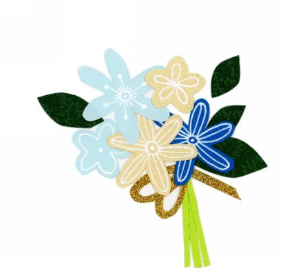
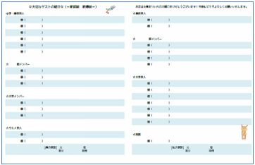
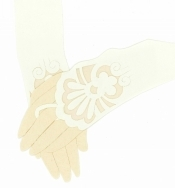

| 100万円＋αで叶える！おもてなし結婚式の作り方 | |
| きゃろる | |
| (2018) | |
＼100万円＋αで叶える！／
節約&おもてなし
結婚式の作り方
きゃろる
Text copyright © 2018 きゃろる
All Rights Reserved
本書の無断転載・複製を禁じます。
自分たちが余裕をもって準備できる資金で、
大切な人々と素敵な場所で過ごす結婚式。
この本を手に取ったあなたが
最高の１日とこれからの人生を
過ごせますように。
はじめに
この本は、低価格で叶える「少人数＆ホテル結婚式」の魅力をお伝えするものです。
一般的な結婚式の平均価格は 、 30 0～ 40 0 万円。
「一生に一度の特別な日だから、お金のことは気にせずやりたいようにやる」、そんな方もいらっしゃいます。
一方で、ブライダルローンを組むとか、お金がないため結婚式を諦めるという声も聞きます。
たしかに、結婚そのものは役所に書類を提出すればできます。
「気恥ずかしい、お金はかけたくない、２人だけで祝いたい」という場合は、レストランで豪華なディナーを食べるとか、フォトウェディン グ( ２人だけで記念写真を撮る形 式) にすることもできます。
それでも、ゲストを交えて結婚式を行うのはとても素敵なことです。
家族に晴れ姿を見てもらい、気の置けない友人を呼んで写真や思い出を残せますし、なにより自分が主役のパーティーを行う機会は、人生の中でそう多くはありません。
そんな中で、私たち夫婦は「少人数＆ホテル結婚式」を通して、「自分たちが気持ちに余裕を持って準備できる資金」で「自分たちもゲストも楽しめる」結婚式を叶えることができました。
それが、これからお伝えする 「 10 0 万円＋αで叶える！おもてなし＆節約ウェディング」です。
結婚式に思い入れを持ったきっかけは、アルバイトで結婚式や２次会のお手伝いをしたことです。
思ったことは、「結婚式を、新郎新婦だけでなく、ゲストも一緒になってより楽しめる時間にするにはどうしたらよいだろう」ということ。
おしゃれな招待状やテーブルコーディネートなど、様々なアイデアが各式場ウェブサイトや個人のブログなどで紹介されています。
一方、ウェブサイトの中には、「契約前にプランナーさんに大幅に割引してもらった」とか「手作りでゲスト１人１人にブローチを作った」など、かなり（技術・精神・時間的に）ハードルの高い工夫も紹介されています。
そこで、この本では自分の経験、反省を踏まえた「誰でも気軽に取り入れられる・お金や手間をかけずに節約する＆ゲストに楽しんでもらう方法」をお伝えしていきます。
これから紹介する方法は、どれも難しい準備などは必要なく、プランナーさんに無理な割引を交渉するものではありません。
なお、 「 10 0 万 円+ α」は実際に結婚式にかかった費用で、ありがたいことに、親族とゲストからのお祝儀だけで結婚式を行うことができました。
きちんとしたコース料理や引き出物を準備し、式場はアクセスのよいきちんとしたホテルです。
工夫すれば、会費制のビュッフェや２次会でなくても、費用を抑えて結婚式ができるんです！
そもそも、お金に余裕があれば結婚式費用の割引や節約を考える必要はないかもしれません。
しかし、私の場合は社会人になりたての頃の結婚で貯金はこれから、というところでした。
また、ハネムーンや将来子どもができてからもお金は必要です。
そこで、「せっかく結婚式を行うなら、限られた予算の中で楽しく準備や工夫をしよう」というのがこの本で大切にしたい想いです。
結婚式のマナーや基本用語、準備のスケジュールなどの本はたくさん出版されているので、この本ではそういった基本的な記載はしていません。
その分、結婚式の様々なアイデアをお伝えして、１つでも読者のみなさんのお役に立てたら、とても嬉しく思います。
✿目 次
はじめに
第１章 少人数＆ホテル結婚式のススメ
第２章 結婚式費用は、こう見る
① 人前挙式
⑩テーブルごとのおしゃべり
～
wit
h
プチギフト～
⑪サプライズプレゼント～返信はがき１等賞～

結婚式の費用に大きく関わるのが、ゲストの人数です。大人数を呼ぶ場合は広い会場が必要で、それぞれのチャペルで収容人数も異なります。
私がおすすめするのは、30名前後の少人数結婚式です。家族、親戚と友人を呼ぶのにちょうどよい人数だと思っています。私たちの場合は、両家の家族７人、友人28人と、合計35人をお呼びしました。
30名前後にした場合のメリットは、 １人１人と顔を合わせてゆっくり話せる、集合写真で全員の顔がよく見える、招待状やメッセージカード準備の手間を減らせる、 などがあります。
集合写真で人数が少なく寂しいことはありませんし、チャペルや披露宴会場で 新郎新婦とゲストの距離が近く 感じられます。
また、会場でも アットホームでゲスト同士がリラックス して過ごせます。
人数を絞ることで大切な人だけお呼びするので、あまり親しくない人をお呼びしてお互いに気を使うこともなく、新郎新婦がお互いの友人を紹介できるなどの余裕も生まれます。
ゲスト人数によってはお車代（遠方のゲストに対する会場までの交通費）を準備するのも大変ですが、少人数なら快くお車代も準備できます。
50～70名などの大人数の結婚式の場合、集合写真で１人１人の顔は小さくなり、話せる時間も短くなってしまいます。また、広い式場を探す必要があり、結婚式の総額も多くなります。
ちなみに、大人数を呼ぶのが夢であれば、堂々と大きな式場を借りればよいですし、２次会で友人を大勢呼ぶこともできます。
ただ、私たちの場合は結婚式だけに絞り、２次会は行いませんでした。
それは、結婚式の後すぐにハネムーンに出かけたため時間がなかったこともありますし、本当に呼びたい人だけ呼んでコース料理もおいしく食べてもらってきちんとおもてなししよう、私たちもお呼びしたゲストが結婚する時には喜んでお祝いに行こう、という考えからでした。
ゲストが多ければ、その分将来そのゲストから結婚式に呼んでもらう回数も増えます。
それは嬉しいことでもありますが、毎回ご祝儀を準備することになるので、ちょっと覚悟した方がよいかもしれません。
式場を選ぶ前に 大体のゲストの人数 を決めておくとよいです。
もし、気に入った会場があっても、ゲストの人数が多すぎたり少なすぎると、その式場を選べなかったり、スペースが狭すぎるとか広すぎる場合があります。
ゲスト選びは悩んでしまいますが、最初にゲストの人数を決めて、その人数に当てはまる人だけ呼ぶのもよいです。人数に限りがないと、どれだけでも増える可能性があります。
ゲストの顔ぶれは、「 一緒にいたら楽しく過ごせそう 」というメンバーを選んではいかがでしょうか。
自分が相手から結婚式に誘われたら喜んで出席するか、という視点で考えてもよいでしょう。
これは私の反省なのですが、遠方のために新幹線で来てもらうのが申し訳なくて、長い付き合いのある友人をお誘いせず後悔しています。
お呼びできず、後日お手紙とプレゼントをくれた方もいましたが、きちんとお車代を出してお誘いすればよかったと思います。
一方、呼びたい人みんなを呼ぶのは人数が多くなってしまう、またはお呼びするか迷うという問題が出るかもしれません。そこでおすすめするのは、結婚式にお呼びするのではなく、別の日に個別でランチに行くことです。
結婚をお祝いしてもらう機会は、結婚式当日だけではありません。式の前や後の日に、友人とゆっくりご飯に行くのはいかがでしょうか。結婚式と違ってお祝儀を持ってきてもらったりドレスでおしゃれしてもらったりする必要はなく、食事なら友人にも気軽に来てもらえます。もし結婚式の予定を聞かれたら、「家族や少人数のゲストでこぢんまりと挙式を行うから...」とやんわり断ることもできます。
また、親戚を呼ぶかどうかも、両家の都合によります。たとえば両家どちらかの家族は親戚とあまり付き合いがない、などの場合もあります。
親戚を結婚式にお呼びしない場合は、お盆やお正月に「これまで見守っていただいてありがとうございました。パートナーとともにこれからもよろしくお願いいたします」とお伝えしてみてください。とても喜ばれるはずです。
さらに、ゲストを呼ぶ際はグループにも気を使うと思います。グループ内のこの人は呼びたいけど、あの人とはちょっと距離があるし...など心配事はありますか。この場合も、 グループのメンバーに縛られずに、呼びたい人だけを呼ぶ のをおすすめします。
「呼ぶかどうしよう」と迷う人の場合、きっと相手も「出席するかどうしよう」と迷ってしまいます。また、グループの人を１人呼べないばかりに、他の呼びたい方をお呼びできないのも寂しいですよね。
本当に来ていただきたい方には「いつもお世話になっているのでぜひ来てもらいたい！」と伝えて、グループ単位ではなく その人個人 と考えてお呼びしてみてはいかがでしょうか。
式場には神社、ゲストハウス、レストランなどさまざまな種類がありますが、私たちは ホテルをおすすめ します。それぞれのメリットはウェブサイトや結婚情報誌で確認していただき、ここでは私自身が感じたホテル結婚式の良さと気になった点をお伝えします。
ホテル結婚式のメリットは サービスと設備に安心 できるところです。サービススタッフのマナーがしっかりしているので家族にも安心して来てもらえますし、エレベーターなどバリアフリーな設備が整っているところが多いでしょう。
また、ホテルは結婚式以外にも収入（宴会や宿泊）があり、お手洗いなどを一般のお客さんとも共有するため、結婚式の費用は比較的良心的だと考えています。
当初、レストラン結婚式は費用を抑えられるイメージがありました。しかし、実際にウェブサイトなどを見てみると、会場によっては衣装や装花について提携業者を通して準備するため費用が高くなってしまったり、着替えのスペースがあまり充実していない、移動の際エレベーターがなく高齢の方には不便、といった様子でした。
ホテル結婚式の場合だと遠方の宿泊者に式場の泊まってもらうこともできますね。
ここで気になった点を伝えると、自分の理想が高すぎるとホテルによってはその理想を叶えられないということです。参考として、私の利用したホテルで気になった点と、その感想をご紹介します。
１．ゲスト専用の挙式前の待合室がない
[ホテル内に過ごすスペースがあったのでよかったです。]
ゲスト専用の待合室がある場合、待合室に写真を飾って見てもらうとかウェルカムドリンクを飲んでくつろいでもらえます。
私たちの式場では、家族用の部屋は用意してもらえました。ゲスト専用のお部屋がない分、お部屋使用料などは請求されず、ゲストにはホテル内のカフェやソファでくつろいでもらえました（後ほど記述しますが、カフェ代は私たちが負担しました）。
２．新郎と新婦の着替えスペースが豪華ではない
[結果としてはリラックスできました。]
ゲストハウスなど、式場によってはブライズルームといって、かわいらしい壁紙に化粧台のある、新郎新婦が着替えるための特別なお部屋を用意しています。
私たちの場合は美容室のようなシンプルなスペースだったので、お姫様気分を味わいたい場合はちょっと物足りないかもしれません。
でも、普段の美容室のようにリラックスして過ごせましたし、パートナーと和気あいあいとしながら挙式までの準備を進められました。
３．チャペル出口からホテル通路が見えてしまう
[本番中は挙式に一生懸命でそこまで気になりませんでした。]
チャペルの中から駐車スペースやホテル通路が見えてしまうので、現実に引き戻される感じはありましたが、挙式中は大きく気になりませんでした。
後日写真を見た時に「背景にちょっと車写ってるね」と感じたくらいです。
また、チャペル出入りの際に通路を通ることで、一般のお客さんにもドレス姿を見てもらえました。
４．式場の都合で、ウェディングドレスに着替えた後にゲストとすれ違ってしまう
[ 「挙式までドレス姿を秘密にしておく」というゲストへのサプライズはできませんでしたが、なんと、別のサプライズがありました。]
着替えスペースとチャペルの位置の都合上、挙式のリハーサル前に受付前を通る必要がありました。
挙式前にゲストと顔を合わせてしまいましたが、受付をやってくれる友人に「ありがとう」と直接言えましたし、受付スペースの飾りを見られたのはよかった
です。
ま た、 めったにあることではありませんが、たまたま私の場合、結婚式と同じ日時・ホテルでパートナーの高校の同窓会が行われていました。
（事前に同窓会の案内はがきでそのことを知り、驚きました。）
そのため、ドレス、タキシードに着替えた後、挙式リハーサル前に、なんとパートナーの高校の先生とばったり会えました。
パートナーが先生と記念撮影をして、嬉しい報告もできたので思いがけないサプライズでした。
５．バルーンリリースができない。
[ ↓ 飛ばした後は環境にも負担がかかりますし、結果的に節約になりました。]
色とりどりの風船をゲストとともに空に飛ばすバルーンリリース。
やってみたかったのですが、街の中にあるホテルのため市販の風船をたくさん飛ばすことはできず、風船も専用のものを使ってほしいとのことでした。
１つあたりの値段も数百円と安くありません。
演出の１つができないのは残念でしたが、結果的に節約になりましたし、環境にもあまりよいといえない演出だったので、今回取り入れなくてもよかったと思いました。
このように、式場によっては理想すべてを叶えることはできないかもしれませんが、「あばたもえくぼ」で、気になる点も 考えようによってはメリット にできます。
小さな気になる点はありましたが、それよりも費用を節約できたことやホテルのサービスが特に不足していなかったことにとても満足しています。
式場見学で「ちょっと気になる」という点があれば、逆にプラスに活用できないか考えてみるのもよいでしょう。
様々な式場を見学して無料で試食できるのは嬉しい反面、見積もり作成や式場の説明を受けるのに時間がかかるので、 やみくもに見学に行くのはおすすめできません 。
あるプランナーさんは、
「10か所以上、式場見学されたお客様もいましたが、選ばれたのは１つ目の式場でした。
式場それぞれによいところ、足りないところはあるので、たくさん見ても迷ってしまい選べなくなるだけではないでしょうか」
と話して い ました 。 私も見学する会場の数は絞るべきだ と 考えま す 。
そこで、少人数～中人数（20～50人くらい）を招待し、お値段を抑えた結婚式を目指すのにおすすめする方法は、 「少人数結婚式」を扱っている式場紹介会社の提携先を調べて、その式場に直接見学しに行くこと です。
式場と直接契約した方が喜ばれるでしょうし、間に業者を挟むより、最初から直接式場担当者と打ち合わせすることでその後もスムーズでしょう。
式場見学までの流れ
① 「 家族挙式」「結婚式 少人数」などでインターネット検索 する
↓
② 提携先のホテルや式場で気になるところをピックアップ
（＋口コミサイトで費用明細をチェックしておくと参考になります！）
↓
③ ホテルや式場のウェディングフェアに 直接申し込む
もちろん、結婚式の口コミサイトで直接ゲスト人数などを絞って検索する方法もありますが、式場がたくさんあって選ぶのに時間がかかってしまいます。「低価格」を狙う、少人数のゲストも歓迎、といった式場選びには、この方法がおすすめです。
ちなみに、ホテルなどではなく、「少人数結婚式」専用の式場を利用する方法もありますが、いくつか気を付ける点があります。
私が見学した式場の場合ですが、式場に食事場所がなかったため、チャペルは少人数結婚式場 で 挙げ て 、食事のために 別のレストランや提携するホテルに移動する必要 がありました。
そのため、移動に時間やタクシー代がかかりますし、結局直接ホテルなどと契約するのとあまり値段が変わりませんでした。
また、場所を移動するため衣装の持ち出し料もかかると言われました。あくまで少人数専用なので、後で呼ぶゲストを増やそうと思っても、30名以上はチャペルに入れず、フラワーシャワーの広いスペースもありませんでした。
バーがないため、ウェルカムドリンクもグラスではなくおしゃれな紙コップに入れて出されるとのこと...
ちなみに、いわゆる高価格の式場では結婚式から１年経った頃に、食事会に招待してもらえることがあります。そういった機会も憧れますが、その費用も自分たちが払った費用に含まれています。
それなら結婚式で払う費用を節約して、貯めたお金で翌年、自分たちで好きなレストランに行き、ちょっとリッチな食事をするのがおすすめです。
最後に、式場選びで大切な点を２つお伝えしたいと思います。
１つ目は、できるだけ アクセスのよい式場 を選ぶことです。ゲストが来やすいのはもちろん、自分たちも結婚式の打ち合わせで数回式場に足を運ぶことになるので、たとえば電車利用の場合、駅から近い立地を選んだり乗換回数が少ないと打ち合わせの負担も減らせます。
２つ目は バリアフリーの設備 がある式場を選ぶことです。高齢のゲストが来てくれる場合には、エレベーターなどの設備があるか確認しておくとよいです。
実際、私の親族の話では、足腰が悪いがエスカレーターなどがなく階段を上れなかったため、車いすに乗ってスタッフに持ち上げてもらったということでした。階段だとヒールを履いているゲストにも負担になってしまいます。
郊外の広いゲストハウスやレストランなどでの結婚式に憧れるかもしれません。けれど、参加するゲストの顔を思い浮かべながら、より挙式当日をスムーズに迎えられるよう、式場選びの際は気を付けてみてください。
かわいらしい婚約指輪。結婚指輪と合わせてはめるのも素敵ですね。
私の場合は付き合った時のペアリングがあったので、婚約指輪を買いませんでした。
実際、いいなぁと思う指輪はあったのですが、婚約指輪自体ははめている期間が短いですし、結婚指輪よりも大ぶりでかわいらしいデザインが多かったため、自分がつけていることを考えると、「私って幸せ！」と周りにアピールしているようでちょっと気が引けたからです。
もともとアクセサリーをつけるのが苦手だったので婚約指輪は購入しませんでしたが、きちんと婚約したことを示すのに、指輪でも、時計やネックレスでも、 何かを交換したりプレゼントしてもらうことは素敵 だと思います。
婚約指輪にこだわらなくても、この機会に気になっていたアクセサリーをゲットするのもいいですね。
知り合いの方は、婚約指輪の代わりに細いピンキーリングをもらって、普段から身に着けたい、と言っていて、いいアイデアだと思いました。
結婚式の費用は、式場ホームページや式場の口コミサイト（「結婚式 口コミ」と検索するとたくさん出てきます）などで見られるので、一度「何にどれくらいかかるか」を見ておくとよいでしょう。
この章では、実際に結婚式でかかった費用の項目とその解説をお伝えします。
① 人前挙式 64,000
② ウェディングプラン530,000
③ 新郎新婦料理6,000
④ 司会者60,000
⑤ 新郎衣装30,000
⑥ 新婦衣装70,000
⑦ 新郎新婦美容着付け75,000
⑧ カフェ利用料金8,500
⑨ ゲスト美容着付け108,000
① ～ ⑨計951,500円
⑩ その他費用 約 300,00 0 円
総額 ： 10 0 万 円+ α！
✿結 婚式費用の詳細
ここでは、先ほどの結婚式費用の表①～⑩の項目について、その中身をご紹介します。
すべての式場には当てはまらないかもしれませんが、「そんな方法もあるんだ」といった視点で見ていただけたら幸いです。
結婚を、神様ではなくゲストに誓うのが人前挙式で、 ゲストが結婚の証人 になってくれます。
司会の方に人前挙式について簡単に説明してもらい、インターネットの例文を参考にして自分たち オリジナルの誓いの言葉 を読み上げました。
たとえば、 相手のどんなところに惹かれたか や、これから 相手に約束すること を誓いの言葉に加えると、より面白い内容になるでしょう。文章は一度プランナーさんにチェックしてもらいましょう。
また、結婚証明書には立会人に名前を書いてもらうシーンがあり、私たちは 友人２人 に書いてもらいました。自分たちの結婚に大きく関わった方がいたら、両親にこだわらず、新郎新婦の大切な方に名前を書いてもらうのもよいですね。
ちなみに、チャペルのお花は備え付けの造花で、 装花代を負担する必要はありません でした。式場によっては、祭壇やゲストのベンチに飾る生花代がかかる場合があります。
また、牧師さんをお呼びしない分、費用はキリスト教式より抑えられました。
このプランは、10名単位で基本料金が決まっていて、ゲスト１名が増えるごとに、料金が追加になります。
今回のプランではゲスト１名につき１万４千円の増加でした。プランには結婚式で必要なもの（コース料理、ドリンク、ペーパーアイテム（席札やメニュー表）、ナフキン、テーブルクロスなど）がほぼ含まれています。
気を付けるポイントは、 基本プランがどれだけ充実しているか 、です。
料理の場合、もし基本のプランで物足りない場合は料理のランクアップもできますが、１人当たり基本料金に２千円追加で、30人なら合計６万円増になります。
ランクアップは、たとえばお肉をよりよいものにしたり、デザートビュッフェを付けるなどがあります。
また、式場によっては、プランのドリンクのみでは乾杯酒やカクテルが入っておらず、その分プランに追加代金が必要な場合もあり、食事とドリンクの料金がゲスト１人あたり２万円ほどになることもあります。
ちなみに、今回の結婚式費用一覧に項目はありませんが、式場によって請求されるものがあり、それがお日柄料や思いもよらない追加料金です。
お日柄料 とは、大安など日柄のよい日にかかる費用で、10万円ほどかかることもあります。また、挙式前にゲストが過ごすゲストルームや式中の音響、プロジェクター使用料も請求される場合があります。
カラオケの機械を借りる、ムービーを流す場合に加えて、 式場指定のＢＧＭを流すだけ でお金がかかる場合もあるんです。
これらはフェア当日契約特典などで、割引になることもあるようですが、油断はできません。
土日や人気な春秋の挙式では、費用の割引額も少なくなるようです。逆に、仏滅の日や日曜日の夜からの結婚式などは、あまり人気でない分、より多くの額を割引してもらいやすくなります。
結婚式当日は、 新郎新婦専用の軽食 を出してもらうのがおすすめです。
軽食にする理由やメリットはたくさんあります。
・試食ですでにコース料理を味わっている
・ゲストと過ごす時間を長くとれる
・ ゲストと話す時に「（自分の）口に何かついてるかな...」と心配しなくてよい
・ゲストのいる前でばくばく食べるのは照れてしまう...などです。
式場によっては食べ切れなかった新郎新婦用のコース料理を、披露宴後に用意してくれる、というところもあるようです。しかし、私たちのところはそういったサービスはなく、すぐにハネムーンに出かけたのでそもそも食べている時間もありませんでした。
式場提供の軽食には、フルーツとサンドイッチ、チョコレートがありました。値段に対して量は少なく感じましたが、コース料理を頼んで大半を残してしまうよりは良かったです。パートナーはゲストとの話に夢中で一口も手を付けなかった、とのことでした。
実際、私もフルーツだけしか食べる余裕がありませんでした。
アルコールを飲むことを考えると軽食がある方がよいので、契約時の特典として、新郎新婦の軽食とドリンクをサービスしてもらえないか頼んでもよいかもしれません。
もしくは、式場が許せば、残すのはもったいないので、 コース料理も軽食も頼まない のはありだと思います。その場合は、新郎新婦のテーブルには空の食器やフェイクフルーツを飾ってもらうとよいでしょう。
ちなみに、私たちは 挙式と披露宴の間 に、 母が作ってくれた味ご飯のおにぎりとみかん を食べていました。母の味はほっとしますね。
お腹を満たしておけば、披露宴中にゲストの料理を見てお腹がすくこともありませんし、ソースやパンくずで 口まわりを汚す心配もない のでおすすめです。
自宅から軽食を持ち込む、家族から差し入れをもらう場合は、事前にプランナーさんに伝えておくとスムーズです。腹ごしらえをしたら、化粧直ししてもらうのを忘れずに。
ベテランの方をリクエストしました。当初、知人の司会の方に頼もうと思いましたが、挙式では要領を分かっている式場提携の司会者に頼む必要がありました。
その場合、挙式と披露宴で別々の司会者をお願いすることになり、その分費用がかかるとのことでした。
司会者の性別や年齢層はある程度リクエストすることができ、私たちはベテランの女性の方をお願いしました。当日、特に親族に落ち着いた進行は好評でした。
式場によっては司会者との２度目の打ち合わせを希望する場合は追加料金がかかる場合があるので、司会者に当日言ってもらいたいことは、打ち合わせ前にまとめておき、１回で済むようにするとよいでしょう。
シャンパンゴールドやシルバーなど、色を選ぶと追加料金がかかりますが、白色で気に入ったデザインのものがあったのでプラン内の料金で選べました。
費用にはシューズ代も含まれています。
上品に見えてサイズ直ししてもらいやすいウェディングドレスにしました。プラン内で気に入ったものは１つだけで、選べる種類は多くありませんでした。
もし、着たいドレスにこだわり（肩を見せるか見せないか、好きなブランドがある、など）がある場合は、契約前に「 自分の希望に近いドレスが、プラン内で選べるか 」を聞いておくのもおすすめです。
実際は契約後に試着してみないと分かりませんが、あまりに少ない選択肢では、プラン内でドレスを選ぶのが難しいことがあります。
ちなみに、プラン内で選んだドレスを自分の希望に近づけるために、アクセサリーやアイテムで工夫することもできます。たとえば露出を少なくしたい場合、ベールを挙式後も身に付けたり、肩に羽織ものをするとよいです。
私のプランにはレンタルのシューズとベール、新婦用のパールのアクセサリー、ティアラがついていました。式場によっては、これらのアイテムはドレスと別料金になる場合があります。
衣装の着付けと新郎新婦のメイク、当日の介添え、新婦のリハーサルメイクを含んだ値段です。
リハーサルメイクで注意してもらいたいのが、髪形の リハーサルが１回しかできない 場合があることです。「リハーサル」と聞いていくつも髪形を試せると思っていたのですが、実際試せたのは１つの髪形だけで、 ２回目以降のヘアアレンジは追加料金がかかる とのことでした。
そこで、事前に希望の髪形を決めておくことをおすすめします。もしくは、リハーサル前に美容院に行き、いくつかヘアアレンジを試しておくのもよいです。
新郎のメイクとは、髪形と眉毛を整えて男性用の化粧（ファンデーション）をしてもらえるもので、写真写りがよくなるそうです。実際、眉がきりっとしていました。女性のようにまつげをカールさせるとか唇を赤く塗ることはないのでご安心ください。
介添えさんは、新郎新婦のお手伝いをしてくれる方です。移動する時にドレスの裾を持ち上げてくれるとか、写真を撮る時に髪形などを直してくれる他、必要なものがあったら取ってきてくださるなど、当日の頼れるお付きの人です。様々な場面で気配りしていただきました。
一般的にいうウェルカムドリンクです。ゲストが挙式前の待ち時間に飲むもので、通常は待合室でドリンクが配られます。私たちのホテルでは、ゲストハウスのようにゲスト専用の待合室を設けていなかったため、ホテル内のカフェでくつろいでもらう形式でした。
こちらが払う費用は、ゲストが飲んだドリンク代のみ。受付の時にゲストに無料のドリンクチケットを渡し、実際のチケットの利用分だけ、新郎新婦に後日請求がありました。
普段、ホテルのカフェでのんびり、友人と過ごすような機会はそう多くないでしょうから、 特別な気分 を味わってもらえるユニークなウェルカムドリンクとなったと思います。
実際、ゲストも楽しんでくれたようで、後日カフェで楽しそうに過ごした写真を送ってくれました。
新郎新婦の家族と、特にお世話になった友人の分の衣装の着付け代、メイク代です。
式場の外で美容着付けをお願いすればより費用を抑えられたと思います。
けれど、ホテル内の美容室で支度できることで、移動の手間や時間の心配もなく、家族や友人にリラックスして過ごしてもらえました。
また、長い付き合いで、様々な場面でお世話になった友人に、これまでの感謝を込めて 美容着付け代をプレゼント させてもらいました。
ちょうど、式場の美容室を使うということだったので、具体的には、友人の分の代金を式場に前払いしておき、当日「新婦から今回、美容着付け代はプレゼントと伺っています」と伝えてもらうようにしました。
式場外に払った費用は主に６種類あります。
インターネットで写真と映像を撮ってくれる会社を探しました。費用は、写真データとビデオ撮影で10万円です。
式場では、アルバム付の写真とビデオをお願いすると20万円、ページ数の多いアルバムをお願いすれば、写真とアルバム代だけで20万円を超えると言われました。式場からは、「提携のカメラマンだと勝手が分かっていて当日も安心」と言われるでしょう。
しかし、 撮影枚数の上限が決まっている とか、基本はアルバムをもらえるだけで、データは別購入の必要がある場合もあります。
そこで、外部の会社を選ぶ際のポイントは次の３つです。①自分が挙式を行う式場で撮影したことが何度もある、②ホームページや映像サンプルがしっかりしている、③お店に伺った時のスタッフの人柄がよい、です。
ちなみに、式場によっては 撮影（カメラマン）の持ち込み料 がかかります。
幸い、私の式場では必要ありませんでした。もし外部に撮影をお願いすることを考えていたら、事前に式場に「カメラの持ち込みをさせてほしい」と伝えておくとよいでしょう。挙式前のメイクシーンも撮ってもらいましょう。
また、持ち込み料を払いたくないために、プロカメラマンに「友人のふりをして撮ってもらう」というアイデアもあるようですが、カメラマンは肩身が狭いでしょうし、思い切って動いて写真を撮りづらいでしょうからおすすめしません。
また、カメラが好きな友人に頼む手もありますが、ご厚意で撮影を引き受けてくれるためわがまま（こうしてほしいという要望）など言いにくいところもありますし、食事を食べながら撮影してもらうというのも余裕がありません。私の場合、きちんとプロに頼んだことで、式当日を安心して過ごせました。
さて、気になる写真撮影の枚数について、業者さんからは「400～500枚撮影するけれど、厳密には撮影枚数に制限を設けていない」ということだったので、式場に飾った小物や、式場外での撮影なども快く了解してもらえました。
映像 について、ぜひ記録として残しておきましょう。結婚記念日に２人で見返すのもいいですね。
結婚式当日の様子をすぐに編集して披露宴の最後に流すという演出もありますが、この場合、撮影・編集費用は、後日渡しの映像の２倍ほどかかることがあります。
結婚式の映像を数時間見るのは疲れてしまうので、全撮影データに加えて ダイジェスト版 として、 結婚式の様子を５分ほどにまとめたものを作ってもらう のがおすすめです。
さらに、 ゲストメッセージ といって、当日にゲストからのメッセージを撮影してくれるサービスがおすすめです。私の場合、挙式と披露宴の間のゲストの待ち時間に撮影してもらいました。みんなの声が聞けて楽しいです。
ちなみに、「披露宴中にメッセージが流されるかと思った！」と緊張して、慎重すぎるほど丁寧に話してくれたゲストもいました。「後日新郎新婦にお届けするものですので、 リラックスしてお話しください 」と案内してもらうとよかったです。
急に「メッセージをください」、と言われても言葉が出ないこともあるので、披露宴の前に、「撮影のスタッフが伺いますので、 ご準備をお願いします 」と司会者から言っていただくのがおすすめです。
そして、せっかくなので 家族からも 映像メッセージをもらいましょう。あらたまって家族の声を残す機会はあまりありませんし、面と向かって言うのは照れてしまう「小さい頃の思い出」や「家族の今の気持ち」を、ビデオカメラの前で話してもらってはいかがでしょうか。
引き出物費用は、家族を除くゲスト28名分×３千800円＝10万６千円でした。
ちなみに、引き出物を式場で購入すると、引き出物代に加えて持ち帰り用の紙袋代（１人350円ほど）が必要で、28人分でも約１万円かかります。
プチギフトは500円の箱菓子を28名分で、１万４千円でした。
詳しくは第４章で後述します。
遠方からのゲストに受付で、 交通費片道分の商品券 をお渡ししてもらいました。交通費については、全額渡すという方もいます。図書券などでもよいですし、デパートやレストランで使える商品券もおすすめです。
現金でもよいのですが、使ってすぐになくなってしまいますし、商品券を使う際に私たちの結婚式のことを思い出してもらえたら嬉しいな、商品券は 使う時にお得感 があってよいな、と考えました。
ちなみに、新幹線を利用したゲストにお車代をお渡ししましたが、１時間以上かけて来てくれる方にお出しするのもよいですね。
ゲストへの招待状や席次表、メッセージカードなどにかかった、印刷代や業者への依頼費用です。
招待状30名分と住所入りの封筒を注文し、「30名×300円＝９千円」をお支払しました。気に入ったデザインでしたし、式場で頼むと１名分で500円ほどかかる場合もあります。
封筒に住所を書く手間も省けましたし、注文の個数によってイニシャルスタンプ（新郎新婦のイニシャルが書かれたスタンプ）をもらえたので、封筒に押すなどして活用できました。
披露宴後半にビンゴを行いました。景品はヴィレッジヴァンガードなどの雑貨屋や書店で揃えました。１等には私も愛用している 電動歯ブラシ を用意。
ギフトカードや癒しグッズも用意しましたが、おすすめは本です。たとえば「きれいな鳥の写真集」や「ワイン、バーの入門講座（漫画）」など、あなた自身が 本屋で見かけたら読んでみたい！ と思ったものがおすすめです。ギフトカードや商品券も人気なようです。
いろいろな雑費です。100円ショップで買った受付グッズ、手作りブーケ用の造花、グローブやサッシュベルトなどが含まれます。両親への記念品は写真立てで、３千円のものを両家分購入しました。
さて、実際に費用をご覧になって、どう感じられましたか。「１つ１つの項目にお金がかかるんだなぁ」とか「この費用なら自分たちにも用意できそう」といった印象でしょうか。
結婚式の費用に正解はありませんが、前述のとおり、一般的に結婚式の費用は300～400万円といいます。「ゲスト人数×３万円」がお祝儀としていただけるといわれています。
80名のゲストをお呼びしたら240万円のお祝儀を式場への支払いに充てられることになります。この場合、持ち出しのお金、つまり自分たちで用意する金額は60～160万円です。
ただし、式場で見積もりをもらう時に、ゲスト人数に自分たち（新郎新婦）も人数にカウントされているとか、１人あたりのお祝儀が「３．３万円」で計算されている場合もあります。実際、そんな端数でお金を包む人はあまりいないのではないでしょうか。
また、親族からは３万円より多くお金を包んでもらえるとか、逆に友人ゲストで２万円だけ包むという方もいるかもしれません。
結婚式費用は前払い、という式場も多いですし、費用を考える際に お祝儀任せにするのは気を付けた方がよい でしょう。お祝儀を考えず、全額自分たちで払えるくらいの金額にしておくと、支払いする時も安心です。
ちなみに私たちのようなゲスト35名の結婚式の場合、単純計算でゲスト１人からお祝儀３万円をいただいたとして、 35 名×３万円で「105万円」を結婚式の費用に加えられることになります。130万円の総費用なら、自分たちで支払うのは25万円となります。
ここで気になるのが、「結婚式の費用をゲストのお祝儀でまかなうのは心苦しくないのか」ということです。実際、結婚式費用を抑えられるなら自分たちで全額払うという選択肢もありですし、結婚式費用にはゲストの料理代や引き出物だけでなく、新郎新婦の衣装代なども含まれています。
たしかに、1.5次会のように、ビュッフェで会費制にすると、ゲストの負担も少なくできます。しかし、私たちは「大切なゲストだけ呼んで結婚式を行おう。もし会費制にしたとしても、自分たちがゲストの結婚式に参加する時は同じようにお祝儀を持っていくのだから、 お祝いの気持ちを素直に受け取ってはどうか 」という結論になりました。
結婚式の費用を究極に抑えようと思ったら、ブライダルの学科を持つ専門学校で生徒さんプロデュースの格安の結婚式を挙げるとか、1.5次会や２次会でわいわいする、という方法もあるでしょう。でも、安心してサービスを受けられる式場にお願いして、 極端な節約だけにこだわらず、費用も労力もできる範囲で結婚式を行う ことをおすすめします。
式当日にとっさのことに対応してくれるスタッフがいると安心ですし、費用も工夫すれば抑えられるはずです。
また、あとでお金を貯めてから結婚式を挙げよう、と思っても、その頃にはゲストに子供がいてお呼びすることが難しくなるとか、「籍を入れてしばらく経つのに今更...」となってしまうことがあります。
ちなみに、費用を抑えるために「ゲストにお車代を出さない」とか「コース料理ではなくビュッフェにする」など、ゲストの満足度を下げるのはＮＧです。
インターネット上には「新郎新婦がけちっていた！」と不満の声も載っていることがあるので、反面教師としてちらっとそういったコメントを見ておくのもよいかもしれません。
結婚式の満足度を決めるのは、かけた費用ではなくて、自分たちとゲストが どれだけ楽しめるか や 感謝の気持ちを伝えられたか だと思っています。節約できるところは堂々と節約して、お金をかけずに工夫できる点を探してみるのも立派なおもてなしです。
この章では、結婚式の費用を抑えるため の 1 5 のリストを記載しました。数ある節約方法のうちの１つとして参考にしてみてください。
ドレスの下に着るインナー（補正下着）は、ドレスを支えるのに欠かせない存在ですが、ブランドものでは２～３万円かかるようです。私は街の中や駅にある下着店で買い、新品で１万円もかかりませんでした。持ち込み料は特にかからないことが多いようです。
前撮りの時にもインナーは役に立ちましたし、結婚式とは別の機会にドレスを着る時にも使えそうですね。自分のサイズが店頭にあるとは限らないので、日程に余裕を持ってサイズを見てもらい、買いに行きましょう。
胸元にインナーのワイヤーが当たって痛い場合や、胸元の開きが気になる時は、ガーゼを縫い付けるとよいでしょう。
また、同じくドレスの中に着るものに、フレアパンツがあります。人から見られるものではありませんが、ドレスを着替える時などに履いておくものです。
こちらも靴下店などに千円以下～数千円で売っているもので十分です。結婚式の後でもスカートの下に履くなど活用できます。
式場で注文すると３万円ほどかかると言われました。生花はきれいですが、式の後に保管しておこうと思うと、プリザーブドフラワーに加工するなどして費用がかかります。
造花にはとてもリアルできれいなものもあり、私は生花にこだわらなかったので、造花のブーケを作りました。材料のお花は造花の卸をやっているお店や結婚式グッズのお店で購入できます。
私の場合、千円位の造花の束を２つ買い、２色を組み合わせてオリジナルブーケを作りました。お花をまとめたら枝中央の手で持つ部分を針金でぐるぐると巻き、上からテープで補強、リボンを巻きました。
自分で作る場合は壊れないようしっかり作る必要がありますが、好きな色や花を組み合わせられる楽しさがあります。今回はラウンドという、まるい出来上がりのベーシックなものを作りました。
ちなみに、自分で造花を購入するのと同じくらいの価格で、インターネットでブーケを購入することもできます。時間に余裕のある方や、手作りが好きな方はブーケ作りをぜひ楽しんでみてください。
もし普段から自分でマニキュアを塗っている方は、特別にお店に行かずに、普段通りに自分のお気に入りのネイルを身に着けるのもＯＫです。
私は普段ネイルアートをしないのですが、せっかくの機会なのでジェルネイルをしました。
結論から言うと、ジェルネイルまで行わなくても、シンプルなネイルアートで良かったと思っています。
今回は２つの私の失敗談をお伝えします。
１つ目の失敗は、自分にジェルネイルが合っていなかったことです。ジェルネイル自体はよい経験でしたし、式後も長くネイルを楽しみたい方にはおすすめです。
しかし、私は普段ネイルをしないので、長い間爪を飾っていることに慣れませんでした。普通のネイルアートと異なり、除光液で簡単に落とすことはできません。
さらに、式後のハネムーンでジェルネイルをつけていることにストレスを感じました。
日にちが経つとどうしても先端の方はデザインがとれてきますが、旅行中なので直すこともできませんでした。
また、爪に厚みがあるため、爪の先を使いづらくなってしまいました（シールをはがせない！など）。
式場のネイルは１万円～で、ネイルサロンでは数千円でお願いできるため、結婚式の２日前か前日に除光液で落とせるネイルアートをやってもらえば十分だったと思っています。
２つ目の失敗として、自分の好きなデザイン通りのネイルにならず残念でした。私は短い爪が好きで、爪を長く伸ばしていませんでした。
そして、ネイルのお店で私の好きなデザインを伝えたのですが、「あなたの爪の長さに、このデザインは似合わない」とズバッと言われてしまったのです。
そこで似たデザインのものを選びましたが、できあがりは納得できず...爪が短くても似合うよう、単色でラインストーンをつけるとか、フレンチネイルくらいにシンプルなデザインにしておけばよかったと思いました。
もしご自身が普段はあまりネイルをしない方であるとか、長い爪が好きでなかったら、結婚式の前に、リハーサルメイクならぬ、 リハーサルネイル を行ってもよいかもしれません。
その時に、自分の爪に似合うデザインを教えてもらうとか、好きなデザインをネイリストさんに見せて爪を伸ばす必要があるか聞いておくなど、対策がとれると思います。
たかが爪先、されど爪先 。花嫁さんの当日の結婚式の気持ちの盛り上がりにも大きな影響がありますので、自分の爪に合う、お気に入りのネイルデザインをぜひ見つけておきましょう。
式場プランでついてくるのは短い丈のグローブで、長い丈のものは７千円かかるとのことでした。インターネットでは数千円で購入でき、デザインも式場にあるものより豊富にあるので、選ぶ楽しさもあります。
指先を隠すタイプと指先を見せるタイプのも の もの、デザインがシンプルなものとゴージャスなもの、などあり、見るのが楽しいです。
そんな中、私は ２度もグローブを買う 羽目になってしまいました。そんな私の失敗談をお伝えしましょう。
インターネットで気に入ったグローブは、注文からすぐ届き、千円以内とお値打ちながら、デザインもよかったです。しかし、結婚式前のドレスのサイズ合わせでは、どうも ドレスとグローブがしっくりきません ...。
実は、同じ「白」でも色合いが違ったので、グローブが浮いて見えたのです。
グローブ購入当時、「白」にいくつも種類があるとは知らず、デザインだけでグローブを選んでいました。しかし、実際は、真っ白なものからクリーム色に近いもの、ベージュっぽいものなど、 白にも個性（種類） があったのです（コラム２を参照）。
ドレスの色を式場で確認したところ、「オフホワイト」（真っ白より黄みがかっている色）ということが判明。インターネットサイトでもう一度購入し直したのでした。
ちなみに、 フィンガーレスのタイプ は、指輪交換の際にグローブを外す必要がなく、ネイルもみんなに見てもらえるのでおすすめです。みなさんがお気に入りのグローブを見つけられますように。
結婚式前にすることといえば、エステ、そしてシェービングでしょうか。腕や背中、顔のうぶ毛を剃ることで、お肌はより白く見え写真写りもよくなります。
「ブライダルシェービング」とインターネットで検索すると、サロンのきれいなウェブサイトが出てきて、お値段は顔そりだけで３千円弱、美肌と引き締め効果のあるセットメニューで３万円など、美にはなかなかお金がかかりそうです。
そんな中、床屋さんでのシェービングはとても良心的です。
床屋さんは、エステ店のように高級な雰囲気はなく、マッサージや美肌パックなどを求めることは難しいでしょう。それでも、床屋さんでのシェービングをお勧めしたいと思います。
まず、 値段が非常に良心的 であることです。私の場合、顔、うなじ、背中、上腕（ひじから下は自分で剃りました）のシェービングで３千円かかりませんでした。希望の全パーツを合わせての値段です。
そして、気取らずにお店で過ごせます。エステのように客席間でしっかりした仕切りがない場合もありますが、男性客がいない時間帯にゆっくり剃ってもらったり、ついたてを置いているところもあります。会員証を作るなどの手間もかかりませんでした。
理容室の探し方について、私は近所を自転車で走っている時に見つけました。シェービングはどの床屋も行っているサービスではありませんし、お店に「ブライダルシェービングをやっています」と書いてあるところもあれば、表記がないけれど実施しているところもあります。
いいな、と思うお店があれば、勇気を出してお店のドアを開けて、「女性の店員さんはいますか？」「ブライダルシェービングをやっていますか？」と聞いてみましょう。
ちなみに、シェービングの当日は、ドレスからどれくらい背中が見えるかなど、試着した時の写真を持っていきましょう。
前撮りで和装と洋装の衣装を着たので、挙式当日はウェディングドレス１着で過ごしました。
前撮りではいろんなポーズでゆっくり写真が撮れますし、ドレスのレンタル代も結婚式当日に借りるより割安で済むことがあります。
せっかく 時間とお金をかけて選ぶウェディングドレス なので、挙式と披露宴の前半だけ着るというのはもったいないと思いました。また、ウェディングドレスを着られるのはこの結婚式の機会くらいです。お色直しにかかる時間も減らせるので、 ゲストともゆっくり過ごせます 。
ウェディングドレス姿に変化を付ける場合は、お色直し代わりに、挙式後、披露宴に アクセサリーを変える とか腰に サッシュベルト を巻くと雰囲気を変えられます。
実際に、おなじドレスを着ていても、少しの工夫で白いドレスに色が入ってかわいくなりました。頭に花冠（お花のリース）を乗せるとか、ヘアチェンジするのもよいですね。
ちなみに、式場によっては「パーツチェンジ」といって挙式と披露宴の間に アクセサリーを変えてもらうだけでも追加料金 がかかるので、事前に式場に確認しておくとよいでしょう。
Before
After
花婿がタキシードを着る際、普段のスーツ用シャツではなく、「ウイングカラーシャツ」という立ち襟のシャツを着用します。
私たちはインターネットで販売しているものを千円台で購入しました。
自分で作ることで費用を抑えられ、自分の好きな写真も選べます。
式場のアルバムの場合、ページ数が少なかったり、大きく重いので持ち運びしにくかったりします。また、ページに余白部分が多いと感じました。そこで、持ち運びやすく自分の好きな写真をできるだけ取り入れたアルバムを作ろうと思いました。
選んだのは、自分で作成する方法です。フジフィルムのフォトブックを利用し、自宅から写真レイアウトを作って注文しました。
フォトブックのよい点はいくつもあります。まず、本のサイズやページ数を選べるので、 コンパクトに持ち運べるサイズ にできることです。あまり大きいと気軽に持ち運んで友人に見てもらいにくいですし、家でも場所をとります。
私はＡ５サイズにし、ページ数は裏表で 48 ページ（実質 24 ページ）。見たい時にさっととり出せて、非常時にもぱっと持ち出せます。
値段も１冊５千～６千円で作成でき、高級感のあるハードブックタイプがおすすめです。レイアウトを自分で選ぶのは面倒、という場合は、ソフトが自動的に写真を配置してくれます。
デメリットは、写真ソフトによっては アルバムデータの保管期間が短い ので後から追加注文しにくいこと、アルバム編集の時間がかかることです。
写真はデータで見る、という場合は、数枚のお気に入りの写真を薄いフォトアルバムにして両親にプレゼントする、などもおすすめです。
また、自宅でソフトをダウンロードして作るほか、写真屋さんの店頭で写真を選んでアルバムを作ることもできます。
実は、ウェディングケーキを頼みませんでした。
結婚式＝ウェディングケーキだと思いますが、ケーキ入刀以外にもシャッターチャンスはありますし、ケーキがなくてもコース料理にデザートがついているので、ケーキがなくても問題ないと思ったからです。
せっかくの機会なのでオリジナルケーキを作ってもらう楽しみがあると思いますが、ゲスト１人あたり千円とすると、ケーキの費用は３万５千円になります。
ゲストに配っても小さいケーキ１切れに千円は高く感じましたし、ケーキの前にみんなに集まってもらうのも式場前方のスペースが狭いことがあります。ケーキカットがなくても特に進行に問題はありませんでした。
私の式場では、ありがたいことに挙式のお花は造花でプランに組み込まれていました。式場によっては、「チャペルの通路と壁に飾る花、マイクに付ける花、ケーキ入刀の際のナイフに付けるお花」など、見積もり項目にもきりがありません。
披露宴では、利用した式場ではメインテーブルの装花はプラン料金に入っており、ゲストテーブルの装花は、テーブル数×５千円。見本のお花のボリュームは、小さなお皿にお花が少し添えられている程度...もちろん、お花を当日にきれいに咲かせるための技術や時間、デザイン料も含めた値段でしょうが、これで５千円は高いと感じました。
次に、外部のお花屋さんからお花を持ち込む方法を検討しましたが、「外部からの持ち込みはご遠慮ください」とのこと。
そうして決めたのは、「 ゲストテーブルにお花を置かない 」という選択でした。式場との契約で「ゲストテーブルに花を置くこと」という決まりはありません。
今回私がこの方法をとれたのは２つ理由があります。
１つ目は、披露宴会場自体がレストランのようで、壁に絵がかかっているとか温かみがあったこと。２つ目はゲストテーブルのサイズが大きすぎないこと、です。
まず、披露宴会場自体が殺風景ではないので、装花を置かなくても特別寂しい感じがしませんでした。
テーブルには席次表やメニュー表、色つきナプキンもありにぎやかです。小さい装花がなくても「けちった」とか「物寂しい」様子はなさそうです。
そして、ゲストテーブルの空きスペースがほとんどできないので、置くとしても装花は小さいもの、背の低いものを置く程度になってしまいます。花がなくてもテーブルは華やかでした。
余分な装花をなくしたおかげで、７テーブル分の値段、３万５千円が節約できました。このお金でドレスをグレードアップしてもいいし、ハネムーンの費用に回すこともできます。
ゲストテーブルの装花をなくしても、メインテーブルのお花をゲストに持って帰ってもらえます。少人数結婚式なので、持って帰ってもらうには十分な数のお花がありました。
では、テーブルには何も置かなかったかというと、フラワーシャワーを飾ってもらいました。メインテーブルの装花と色味を合わせたので統一感があり、フラワーシャワーなら数千円で準備できました。
花びらが並んでいる感じもきれいだし、花瓶など置いていないので水がこぼれたりゲスト同士顔が見えない心配もありません。フラワーシャワーはお気に入りのぬいぐるみや写真立ての周りに飾ることもでき、おすすめです。
フラワーシャワーを除き、明らかに「お花」というものでなければテーブルに置けたので 、 10 0 円ショップなどでちょっとした飾りを買っておくのもよいですね。
カラー、Ａ４サイズで前撮り写真を印刷し 、 1 0 0 円ショップの額縁に入れました。
よく見かけるのは、イーゼルに立て掛けるタイプの大きなウェルカムボードで、新郎新婦の写真や似顔絵を飾るとか、英語で結婚式の日にちなどがかっこよく書かれたものです。
大きいサイズのものだと、今後家で飾ったり保管したりするのに場所をとりますし、インターネットなどで購入すると数千円かかります。
Ａ４サイズのウェルカムボードにするメリットは、費用がほとんどかからないこと。自前でプリンターがあれば印刷分の費用だけですし、インターネットで写真印刷を頼んでも、Ａ４サイズ１枚 で 10 0 円台＋送料で印刷してもらえます。そして、結婚式の後は大きな荷物にならず自宅にも飾れます。
前撮り写真はパソコンのペイント機能などで「Ｗｅｌｃｏｍｅ！」とか挙式の日付を入れてから印刷するとよいです。
ちなみに、大きなウェルカムボードがない場合、受付の位置などをきちんとゲストに伝えられるか心配かもしれませんが、式場で「○○・○○ご両家 結婚披露宴 受付」と見やすいサインを立ててくれることがあります。
大きなウェルカムボードにしても、デザインによっては、パッと見て英語の筆記体でなんと書いてあるか分からないこともあります。
肩肘をはらず、力を抜いて準備して大丈夫です。
結婚式のウェブサイトを見ると、小さいトランクやかわいいぬいぐるみなど雑貨屋さんのようにおしゃれな受付スペースの写真がたくさんありますが、アイデアを考えるとか小道具を揃えるのも一苦労です。
そこで、私の場合は次のグッズを準備しました 。 10 0 円ショップで買ったハイビスカスのレイ（夏の挙式だったため）、写真立て、家族からもらったぬいぐるみ、ガーランド（ひもに飾りがついていて、垂らすようにして飾るもの）、フォトブックです。
あれもこれも労力をかけようと思うと疲れてしまうので、大きなこだわりがなければ、グッズだけ用意して、会場に飾りつけをお任せしてみてください。
ここで、簡単手作り写真立て＆芳名帳をご紹介します！
[１] 手作り写真立て
用意するもの
小さいイーゼル
（ 10 0 円ショップ、プラスチック製で折りたためるものが便利）、
カードケースＡ４サイズ （ 10 0 円ショップ）、
印刷用紙（Ａ４サイズ、色つきがおすすめ）、
小さい頃の写真、好きなシール、
マスキングテープ
作り方
① 印刷用紙に写真やシールを貼る。
② 用紙をカードケースに入れて、カードケースの
周りをマスキングテープでふちどる。
③ カードケースを小さいイーゼルに立てかける。
できあがり！
この写真立てのよいところは、カードケースを使うことで裏表違う写真を用意することができ、受付の時と披露宴のスペースに飾る時で写真をぱっと変えることができることです。
また、カードケース自体が薄いため、自宅でも保管しやすいです。写真も汚れません。
新郎バージョン、新婦バージョンで１つずつ作り、並べてみるのもよいです。
また、逆三角形上に、「新郎両親の結婚式、新婦両親の結婚式、自分たちの前撮り写真」を印刷用紙に貼って写真立てを作るのも楽しいですよ。
両家の両親にもきっと、なつかしい、と当時の結婚式を振り返ってもらえます。
[2 ] 手作り芳名帳
用意するもの
印刷用紙（Ａ４サイズ、色つき）、
マスキングテープ生地のシール
（ペンで文字が書きやすいもの）、
お気に入りのシール
作り方
① 印刷用紙にゲストの人数分のシールを貼る。
できあがり！
使い方は、シールにゲストの名前を書いてもらうだけ！ゲストの書く負担も少なく、「どこに名前を書こうかな」とワクワクしてもらえます。
芳名帳というと、リッチな表紙と台紙の冊子で、罫線の引かれた白い用紙に名前や住所を書いていくことが多かったのではないでしょうか。
そもそも住所は結婚式出欠の返信はがきにありますし、あとでゲストのお名前を見返す時に、少しでもときめくデザインだと嬉しくなりますよね。
マスキングテープ生地のシールなのでペンで字も書きやすく、額縁に入れて飾るインテリアとしてもぴったりです。
指輪を入れるピローは、手作りキットが売っていたり、既製品を購入することもできますよね。
結婚式後は、結婚指輪の代わりにペアリングを入れてもいいですし、こだわりのある方はお気に入りのリングピローを準備してもよいと思います。
しかし、私のおすすめは、ずばり、 結婚指輪を購入した時のリングケース の活用です。
結婚指輪が入っていたリングケース（箱）は布地でできてきれいでしたし、リングピローは写真には撮られるけどそれほど人に見られる機会が多くないと感じました。
指輪を買った時のときめきも思い出せますし、結婚式当日のリングピローとしてリングケースを使うのもいいですよ。
プリザーブドフラワーの写真立てをプレゼントしました。
両親から言われていたのは、「花束はくれなくていいからね」ということ。
お花は枯れてしまうし、両親へのプレゼントに高いお金を使う必要はないとのことでした。
たしかに、お花なら装花を持ち帰ることもできますし、お家の庭で育てているなど身近でもあったので、特別贈らなくてもよいかなと思いました。
他のプレゼント案は、自分が生まれた頃の体重と同じくまのぬいぐるみや、３つセットになった時計でしたが、ぬいぐるみも時計も家にたくさんあるし、値段も安くないと感じました。
そこで、写真立て。前撮り写真を入れて、色違いで両家の両親に渡しました。プリザーブドフラワーなので枯れることはないし、両家ともピアノやテレビの上に飾ってくれていました。
結婚式当日に記念品を渡して写真を撮る時も、ゲストに見てもらえたり写真にしっかり残りますし、写真立ての中の写真を入れ替えることもできるので、きっと長く使ってもらえますよ。
「結婚式だから好きな音楽をかけたい！」という思いがあるかもしれませんが、もしかしたら手間やお金がかかるかもしれません。
たとえば、曲を流してもらうのに、著作権の都合でＣＤの原版を準備する必要があります。「結婚式 ＢＧＭ 有料」などと検索すると、詳しく分かります。
また、会場によっては、曲を選べる範囲がプラン料金によって変わることがあり、好きな曲を選ぶためにはお金がかかることがあります。
そもそも、これまで出席してきたイベントごとなどで、「ＢＧＭがとても印象に残っていた」という経験はほとんどありません。
もちろんお気に入りの曲が流れていたら「あ、あのアーティストの曲だ！」とはなりますが、ＢＧＭは雰囲気を作ってくれるもので、メインのものではありません。
曲を１つ１つ選ぶ労力も大変ですし、当日は式の進行やゲストとのおしゃべりで忙しく、曲をゆっくり楽しむ余裕もないかもしれません。
演出の都合や、絶対にかけたい曲がある、という場合でなければ、会場にＢＧＭをお任せすることをおすすめします。
ドレスを選ぶ前に、そして結婚の前後にぜひおすすめしたいのが、 「パーソナルカラー」と「骨格診断」 です。
パーソナルカラーとは、その人の目の色、肌の色などからあなたにぴったりの色を診断するもので、スプリング・サマー・オータム・ウインターの４つのタイプに分類されます。洋服やバック選びに役立ち、あなたをより引き立ててくれる色を知れます。
骨格診断では、体の肉付きや関節・鎖骨の様子から、あなたに似合う服装の傾向を３パターンの中から診断してもらえます。
私は以前、服選びには無頓着でした。小さい頃からおさがりを着てきて、お店で「いいな」と思った服を買っても、実際着てみるとあまり似合わない...おしゃれって難しいと思っていました。
けれど、こうした診断を受けることで１つの指針ができ、買い物の際により自分の魅力を上げる服を選べるようになりました。
同じ「ピンク」でも色味や明るさで自分に似合うもの、似合わないものがあるんですよ。
結婚式を機会にこの診断をおすすめする理由は２つあります。
まずは、ドレスや小物選びに非常に役立つからです。
ドレスの色も、真っ白やオフホワイト（少し黄みがかったもの）などさまざまな種類があり、アクセサリーもゴールドとシルバーなど色味が異なります。イヤリングやネックレスは小ぶりなものを付けるか、ゴージャスなものがよいか...など選択肢がたくさんあります。
もちろん、自分の好きなものを身に着けるのもよいですが、少し客観的な意見も取り入れてみませんか。
たとえば、私の場合オータム（秋色）、ウェーブタイプです。真っ白よりもオフホワイトの方が似合い、ハイウエスト（ウエスト位置が高めにある）の方がきれいに見えます。色によって顔色がよく見えたり、スタイルよく見えるのです。
診断を知ることで、自分に似合うドレスの形や色のタイプを知ることができます。これは、自分のタイプと違う色やドレスの形を選んではいけない、ということではありません。しかし、診断結果で自分に合う雰囲気の式場を選ぶことにも繋がるし、早くやって損はない、むしろ得をすると感じています。
また、２つ目の理由で、結婚式が終わっても毎日の生活で診断が役立つからです。自分のタイプを知っていれば、服を選ぶのも楽しく、選ぶ時間を短縮でき、その日１日を気分よく過ごせます。
診断方法は、個人の方に依頼する方法とデパートで見てもらう方法があります。事前に本やインターネットで調べて簡易診断することもできますが、骨格診断は自分で判断するのも難しく、客観的に見てもらうとより安心してそのタイプだと実感できます。
個人で依頼する場合は「パーソナルカラー 地名(東京や名古屋)」と検索して、先生のブログを読んだり値段で決めます。私は２～３万円の価格の個人サロンに診断してもらいました。安い値段ではありませんが、診断後に個人に合わせた服装アドバイスを送って下さったり、駅からのアクセスもよかったです。
デパートの場合は会員カードを持っている必要があったり、予約待ちですぐに診断してもらえないことがありますが、診断後にお店にあるおすすめの服を紹介してもらいやすいでしょう。
自分に似合う色と服装を味方につけて、結婚式当日もとびっきり輝きましょう。
この章では、結婚式でゲストに喜んでもらうため の 1 5 のリストを記載しました。１つの方法として参考になれば嬉しいです。
引き出物は宅配を使いました。「引き出物宅配」と検索すると、専用のページがいくつも出てきます。
メリットは、ゲストの荷物にならないので雨の日や遠方の方にも負担になりにくいこと、ゲストごとに違った引き出物を選べることです。
せっかく贈り物をするので、普段は高価で自分では買わないお菓子や食品を贈るのもよいですね。
「引き出物」のウェブサイトにある商品だけにしばられず、自分の好きなお店で選んでみるのもＯＫです。ふるさと納税も参考になります。
ちなみに、今から選ぶなら、「 カードタイプのカタログギフト 」を贈ります。これは、インターネットからギフトを選んで注文するもので、重いカタログを持ち帰ってもらう必要がありません。希望の方には後日冊子のカタログを送ってもらえるそうです。
カードタイプなら小さいので持ち込み料はかからないし、カタログを処分する手間もかかりません。
プチギフトは、好きなブランドの箱菓子をプレゼントしました。プチギフトとはその名の通り小さなものが多いですが、いわゆる「プチギフト」でカタログを見ると、数百円でお菓子がちょっとしか入っていないとか、小瓶にちょっとジャムが入っているなど、物足りないと感じました。
箱菓子だと、中身のボリュームもあり、持ち帰るのに荷物にならないサイズです。洗剤とスポンジのセットもユニークで日常で使ってもらえます。
「プチギフト」の名前に捉われず、こちらも自分がみんなにプレゼントしたいものを送るとよいでしょう。
招待状を準備して、後は送るだけ...という際に、ぜひおすすめしたいのが風景印です。
風景印は、郵送時にはがきや封筒に押してもらえる消印で、郵便局によって違うデザインだったり、記念切手の販売で特別印を押してもらうこともできます。
風景印の依頼方法は、郵便局に行って、「風景印をお願いします」と伝えるだけ。
ディズニーランドのポストやその土地ならではのデザインもあり（名古屋ならしゃちほこなど）、お金をかけずに受け取った時のわくわく感を演出できます。
ちなみに、招待状など枚数が多く、「大安」の日に送るなど日柄を気にする場合、郵便局には閉店ぎりぎりに行くより昼ごろなど余裕を持ってお願いするとよいでしょう。
自分の地元の郵便局の風景印にしても、旅先から風景印で送るのも楽しいですね。ぜひインターネット検索などであらかじめ、最寄りの郵便局で風景印を扱っているかや、どんな柄があるかなどを調べてみましょう。合わせて、お祝い用切手も確認しておきましょう。
返信はがきでは「出席」と「欠席」のどちらかを選んで出しますが、心配なのは返事が締切日までに来るか、ではないでしょうか。
聞いた話で「いいな」と思ったのが、「出席の方だけはがきを出してもらう」というもの。
日常で、何かを断ったり「欠席」を伝えるのはちょっと腰が重くなりませんか。
欠席の場合でもメッセージをもらえるし、はっきり「欠席」と伝えてもらうと安心しますが、１つの方法として、「締切日までに送ってくれた方が参加するゲスト」と考えるのはいいアイデアだと思います。
これなら、「返事が来ないけど出席か欠席かどっちかな...」ともやもやすることもありませんし、大切な友人の結婚式なら、きちんと締切までに返事をしてくれるはず。
期限を過ぎても返事が来ない場合、結婚式当日で遅刻されたり、悲しい場合、急に欠席という場合もありえるかもしれません。送る側も受け取る側も気が楽になるアイデアです。
ちなみに、返信はがきに誕生日を書いてもらうのもおすすめです。誕生日が近いゲストにはちょっとしたプレゼントを渡せますよ。
式前日に、クロークの場所や当日の案内をゲスト全員にメッセージで伝えました。
招待状で式場について案内しており、事前にゲストが着替える場所などをお伝えしていましたが、再度、結婚式の前日に結婚式の当日案内をしました。
イベントの前は誰でもドキドキしているものですし、来てくれる方に「ありがとう！」を伝えられるチャンスです。
ワード文書で手作りしました。席次表は式場のプラン外でしたし、格式高いものより、かわいらしい、ほんわかしたデザインにしようと思いました。
[１]
席次表の左下にはメッセージや、受披露宴会場に飾ってある、頂き物の手作り品の紹介文を書きました。
また、机の順番は「Ａ、Ｂ、Ｃ...」ではなく、「Ｔ、Ｈ、Ａ、Ｎ、Ｋ、Ｕ（ＹＯＵ）、❤」、つまりサンキューとして、遊び心を入れました。
ゲストがテーブルに座って「なんでＴなんだろう」と思った時に、席次表を見てメッセージに気づいてくれたら面白いですよね。
[２]
席次表の裏には、ゲスト紹介を入れました。ゲストのお名前、ニックネームと、１人ずつの素敵なところを１言ずつ紹介しています。
こうした手間をかけられるのも、少人数ならではですね。ちなみに、親族とゲストの距離が近くなるようにと、親族の紹介も入れました。プランナーさんや司会者の名前を入れるのもよいですね。
印刷は自宅や実家にプリンターがあれば自前で印刷します。２色（今回は白と水色）で段を分け、枠線を入れないことですっきりしたデザインにできます。（次ページ参照）
[1]
[2]

ゲスト１人ずつに宛ててポストカードにメッセージを書き、ビンゴカードと一緒に封筒に入れてゲストテーブルに置いておきました。ポストカードだと書く量が多くなるので、名刺サイズのカードにメッセージを書いて、席札の裏に貼っておくのがちょうどよかったと思います。
封筒の宛て名書きは、せっかくなので飾り文字で書いてみてはいかがでしょうか。私もウェディングフェアで飾り文字で書いてある自分たち宛てのカードを見て、 とっても嬉しい気持ち になりました。
おすすめは、 「筆文字アート」 。ためしに、「筆文字アート 筆ペン」と検索してみてください。かわいらしい字の画像がたくさん出てきます。
たとえば、「あ」や「の」など、文字の中に空間がある場合、
そこに「 目と口」を書き加えるだけ で空間にスマイルが生ま
れます。下図を見てください、なんだか、かわいいですよね。
しかも、筆ペンとカラーペン数本があれば描けます。
実際、私もゲストの名前を筆文字アートで書いたところ評判が
よく「え、自分で書いたの！」と喜んでもらえました。
食べる前や外から帰ったら、手をきれいにしないとなんとなく落ち着かないのではないでしょうか。
披露宴ではナプキンが準備されているはずですが、これは口元が汚れた時に使うもの。
そこで、披露宴でおしぼりを準備してもらえるかプランナーの方に確認しておきましょう。１人いくら、と請求されずに、こちらは食事代に含めてもらえることが多いはずです。
特に夏場だと手をさっぱりさせられるのは喜ばれますし、食事前の乾杯時などにおしぼりを準備してもらうことをおすすめします。
きっかけは、留学中に参加したパーティー。パーティーが始まる前に、３～５人くらいのグループで写真を撮ってもらい、希望した写真は後で購入できるというものだったのですが、仲のよい友人とプロに写真を撮ってもらうって楽しい♪という気持ちを今でも覚えています。
タイミングは、式と披露宴の間です。この間、新郎新婦は化粧直しやお色直し、私たちの場合は昼食をとっていたので、カメラマンの方もそう忙しくないはずです。
そこで、事前にカメラマンと司会者の方に伝えておき、「披露宴が始まるまでの待ち時間に、ゲストのお写真を撮ってください」とお願いしました。
新郎新婦とゲストが一緒に映っていれば新郎新婦に目がいきがちですが、ゲストだけの写真を撮ることで、ゲスト自身にも主役になってもらえ、素敵なドレス、スーツ姿を残すことができます。この写真は後日ゲストごとにデータと現像したものをお送りしました。
ちなみに、司会者や料理長の写真も撮ってもらい、後日現像して渡しました。
司会者の方は見られるお仕事で、司会中の写真はきっと喜んでもらえると思ったからです。さらに、料理長の写真は、「シェフによるメニュー紹介」の際のものです。
このように、お世話になった方にちょっとしたお礼として渡すのはおすすめです。この場合、カメラマンには事前に伝えておきましょう。
私の場合は未婚のゲストだけだったので、男女別でブーケトスをしました。
女子にはソープでできた造花のブーケ、男子にはブロッコリートスをしました。ブロッコリーは房が多く、子だくさん、という意味で縁起がいいんだそうです。
ブーケトス＝お花、と思わず、お菓子やぬいぐるみを投げてもよかったと思います。
また、せっかく少人数のゲストなら、男女一緒にブーケトスを行うのもおすすめです。
お互いが話せるチャンスですし、片方の性別グループだけやることがない...ということにもなりません。
会場の空きスペースでテーブルごとに集まってもらいお喋りしました。
ゲストとの記念撮影などでは、新郎新婦がテーブルを回るテーブルラウンドか、ゲストが新郎新婦の席に来てくれる場合が主流だと思います。
私の場合は、各テーブル間のスペースが狭かったこと、ゲストと近い距離で話したかったことから、会場の空きスペースで新郎新婦とゲストが立って話す時間を設けました。
司会者の声掛けで、テーブルごとに集まってもらいます。こうすると、新郎新婦もゲストも、 全身の写真 を撮れるのでおすすめです。
テーブルの時と違って立食パーティーのように顔を近くしてお話しできました。そして、この時に、１人ずつに プチギフトを手渡し しました。披露宴後に渡すのもドタバタしてしまうし、「席次表などをこの袋に入れて持ち帰ってね。今日は来てくれてありがとう。」とゲストに声をかけられました。
このタイミングで、結婚式前にプレゼントをくれたゲストにプチプレゼントを渡しました。
プチギフトと同じ紙袋に入れて渡したのですが、事前に「○○さんへ」と書いたメモを紙袋に貼っておき、ホテルスタッフの方にも教えてもらって正しい方にお渡しできました。
このプチギフトにリボンや印をランダムで付けて、当選者にはさらにプチプレゼントが当たる！というのも面白いかもしれませんね。
招待状の返信はがきを最初にくれた方に、小さな箱菓子をプレゼントしました。
ゲスト１人ずつの席に、リボンで巻いたウェディング新聞を置いて、その中の １つだけリボンの色を変えて おきます。
そして、披露宴の途中で「お１人だけウェディング新聞のリボンの色が違う方にプレゼントがあります！」とアナウンスしてもらいました。
真っ先に「行くよ！」と言ってくれるのは嬉しいもの。
プレゼントを渡した後に、ゲストの前で司会者からネタばらし（１番に返信はがきをくれた方にプレゼントするというもの）をしてもらいました。
ビンゴは当たるかドキドキで楽しいですよね。
時間短縮のためにくじ引きにする（ゲストの名前を書いたくじを引いていくなど）のもよいですが、ここでビンゴがさらに楽しくなるアイデアをご紹介します。
まず、ビンゴカードの柄からスタートします。一般的なシンプルなものでもよいですが、今はディズニー柄もあります。
インターネットで買えますし、「○○のキャラクターのカードを持っている人は当たり！」と大胆なゲーム進行でもよいでしょう。
次に、ビンゴカードの数を「５×５」から「３×３」にすることです。つまり、ビンゴカード外枠の数字を最初からゲストに開けてもらうのです。こうすると、ビンゴになるまでのスピードが速くなり、ゲストはリーチかどうか把握しやすくなります。
ちなみに、ビンゴのくじを作るのに紙を準備するのは少し手間なので、 フレークシの裏にペンで数字を書く 、というのも時短になりますよ！ぜひお試しあれ！
花嫁の手紙は今や披露宴のプログラムには定番となっているようで、専用の便箋なども売っています。
しかし、私は披露宴中に親族への手紙を読む時間を設けませんでした。
１つには、楽しい雰囲気のパーティーにしたかったからです。感動的でしんみりした雰囲気より、最初から最後まで笑顔で過ごしたいと思いました。
また、手紙や家族との思い出は非常にパーソナルなものです。いくら感動的とはいえ、ゲストに自分の話を聞いてもらうより、その時間をゲストと話す時間に充てようと思いました。
ちなみに、便箋は専用のものを買わず、家にある普通の便箋を使い、両家の家族１人ずつにメッセージを書きました。
とてもドラマチックな出会いや、乗り越えた壁が大きい方は花嫁の手紙でその熱い思いを伝えるのもよいですが、私の場合は親族に記念品を渡す時に一言感謝を伝えるだけで十分だったと思います。
「披露宴の退場」というと、ゲストは拍手で新郎新婦の退場を見送るというイメージが多いのではないでしょうか。
せっかくアットホームな会なので、ここでもゲストと近く顔を合わせられるチャンスです。
おすすめは、 退場ハイタッチ 。司会者の方に「ゲストに２列に分かれて並んでもらう」ように伝えてもらい、その間を新郎新婦がハイタッチして「ありがとう～！」と言いながら通っていくのです。ハイタッチが恥ずかしい方は、 握手 もおすすめです。
写真を見返すと、みんな新鮮な体験ということもあってか笑顔でいてくれました。
自分自身も「アイドルのように拍手で、距離がある中で見送られる」よりも、「顔を合わせて感謝を伝えられた」というのでとても思い出に残っています。
結婚式が終わったら、ハネムーンもあるしそれっきりということはありませんか。
もちろん、披露宴中に「ありがとう！」とゲストに伝えていますが、感謝の気持ちは何度伝えてもいいもの、ぜひ当日中にお礼の連絡をしましょう。
私の場合は、１人ずつにメッセージで伝えました。ゲストからは、「当日に連絡をくれるなんて、最後まで気遣い上手だね！」と喜んでもらえました。
また、結婚式や２次会に参加したのに、 一緒に撮った写真データなどが送られてこない... という経験はありませんか。
せっかく素敵な衣装と笑顔で参加したのに残念ですよね。そこで、２つの方法でゲストに写真をシェアしました。
１つ目は、写真データをインターネットにアップロードしたことです。パスワードを入れたら見られるようにしておきます。「結婚式 写真 共有」と検索すると、いくつか写真共有の無料ウェブサイトが出てきます。
２つ目は、全体写真や個別のよく撮れている写真を現像して、ゲストに送りました。
スマートホンやデジカメがあるのでなかなか現像する機会はないと思いますが、インターネット注文なら店舗注文より安く現像でき、１枚10円前後で印刷してもらえます。
せっかくプロカメラマンの画質の良い写真なので、紙媒体で時々見返してもらってはいかがでしょうか。
最後に、結婚式を振り返って、この本であなたにお伝えしたいことをまとめておきます。
最近の100円ショップは、本当に何でも揃っています！結婚式関連でいえば、アクセサリーや花冠を始め、フラワーシャワーやガーランド、受付に置けるようなおしゃれなケースなども置いてあります。
たとえばブローチなどを手作りするのもよいですが、100円ショップを一度覗いてみてください。結婚式準備が楽しく、そして気軽になりますよ。
演出や結婚式グッズなど、紹介されているものを次々と取り入れる前に、一度「他で置き換えられないか」、「本当に必要か」と立ち止まって考えてみてください。
たとえばビデオ映像。映像を流すのにはスクリーンや音響代がかかります。
これをフォトブックや写真コーナーに置き換えれば、映像を流すお金もかからず、会場を暗くしてゲストは手元が見えず食事がしにくい、ということもありません。気になった写真をじっくり見てもらうこともできます。
また、ＢＧＭにこだわってＣＤの原版を集めたり曲順を決めるのに奔走するのではなく、式場にお任せできることは力を抜いてみるのも１つです。受付の飾り方も、ホテルの方にお任せしたら素敵にアレンジしてもらえました。
結婚式にはある程度「こうだろう」「こうあるべき」というイメージがあると思いますが、私たちのようにリングピローやウェディングケーキがない結婚式もＯＫです。
装花も披露宴会場になくても支障がなかったため注文しませんでした。ウェディング情報誌や、プランナーさん、式場の提案に流されずに、必要のないものには堂々と「ＮＯ！」と言いましょう。
どんなに素敵な会場でも、新郎新婦がゲストを置いてけぼりにしては、ゲストは「来て楽しくなかった」と感じてしまいます。
せっかくの豪華な会場や料理でも、新郎新婦が不満を言っていたり、受け身の姿勢だけでは楽しさも半減してしまいますよね。
一方、たとえ小さな会場や有名ではない場所であっても、新郎新婦の２人が笑顔でいたら、ゲストと嬉しい気持ちを共有できます。
一番大切なのは、 新郎新婦が笑顔でその瞬間を楽しむ こと。そうすれば、どんな会場でもきっと素敵な結婚式となるはずです。
結婚式が迎えられるというのはとても幸せなことです。私自身、当日の天気が晴れるか心配でしたし、何より式当日が迎えられるか根拠のない不安な気持ちがありました。
それでも、式当日は快晴で、ゲストは全員出席してくれて、心配しすぎなくてよかったんだ、と取り越し苦労だったと思いました。
人と比べることには、きりがありません。
自分自身の容姿や中身を始め、パートナーも結婚式場も本当に人それぞれ。結婚式だって、私よりもっとうまく節約した人もいるし、節約に捉われずに豪華な結婚式をした友人もいます。
けれど、私たちのために時間とお金を使って来てくれるゲストとの出会い、そしてお互いに一緒に生きていこうと言ってくれるパートナーがいることはかけがいのないこと。
他の人が持っていて自分が持っていないものもあれば、その逆もあり、結婚式でも人生でも、人と比べない、人と違う部分や経験をむしろ誇りに思って過ごせば、きっと自分も周りも人生が豊かになると思いました。
「当たり前」と思ったら不満は出てきてしまうけれど、「ありがとう」と 今の自分の身の回りに感謝することで、幸せはいつでも見つけられる のだと改めて感じています。
結婚し て 今年で２年になります が 、結婚式が昨日のことのように思い出されます。私は式場選びで５つの式場を回りましたが、どの式場もいいところ、気になるところがあってとても迷いました。
たとえば、豪華な式場は華やかですが、費用や立地が気になっていました。
でも、パートナーからは「初めて来た場所だからよく見えるけど、何度か来る中で見慣れてくるよ。」と言われて、式場のきれいさだけで惑わされないようにしようと少し落ち着けました。
実は、一度契約してキャンセル料が少ないうちに解約した式場もありましたが、そこはプランナーさんに強く押されて「まぁ、ここにしよう」と決めたところでした。「式場見学当日だけの大幅割引」という言葉に捉われずに、「少し考えたい」と言えればよかったです。
最終的には良心的な式場と出会えましたが、それも式場選びにたくさん悩んだからだと思っています。もしみなさんが「少人数＆ホテル結婚式」、自分にぴったりだな、と思ったら、この本がそれを叶える近道になれば、この本を書いて本当に良かったと思います。
結婚式を振り返って、自分たちの予算を大切にしたおかげで、今も気持ちに余裕のある生活を送れていることにほっとしています。もし、結婚式１日に数百万円のお金を使っていたら、少し気持ちに余裕がなくなっていたかもしれません。
同時に、 使えるお金に限りがあっても 、自分の思い描く結婚式を叶えてゲストと楽しい時間を過ごせたことは、 結婚式をよりかけがいのない、思い出深いもの にしてくれました。
肝心の結婚生活は、まだまだ修行中です。料理のレパートリーも増やしたいし、掃除も洗濯もこなす毎日に疲れてしまうこともあります。考え方の違う２人が一緒に生活していくためには、お互いの思いやりも必要です。
でも、そんな時は...パートナーと頑張っていこうと誓って、家族や友人が「おめでとう。頑張っていってね」と応援してくれた結婚式を思い出すと、また前に進んでいこう、そう思えてきます。
この本に出会ってくださったみなさんが、大切な人たちと素敵な場所で、結婚式という最高の１日とこれからの人生を過ごせますよう祈っています。
＼ Thank you for readin g ♡／
イラスト
miwosan
Special Thanks
けんちゃん
コロちゃん
おきしー

書くこととお片付けが好きな20代OL。
興味を持ったことはまずやってみる性格で、
学生時代のアルバイトは結婚式場からコールセンター、美容院まで様々。
趣味はwebページ作成。
ライターとして、メイド・イン・ナゴヤで
名古屋名物の紹介も行っています。
メイド・イン・ナゴヤ
https://nagoya.view.cafe/
2018年3月27日 印刷・発行
著 者 きゃろる